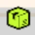

ROB RUN beginner guide: where to start
Start with the tutorial: you break out of prison to Lenny's Motel and head from there to Looty Bay. Without a mask you're a Civilian, and dying costs you nothing. Put the mask on and you're a Criminal: you have to get the loot out of the city alive, and dying loses your whole inventory. Keep your money in a bank account, and expect the federal raid once a week.
Updated . The game is in Early Access and changes every week.
The tutorial step by step
- Prison. Spit in the chow, speak with the Tattoo Artist and escape through the exit.
- Lenny's Motel. Speak with Lenny, unlock a pistol with ammo, rent a vehicle and leave the motel area.
- Looty Bay. Find a deserted place and put on your mask. Get a valuable item, sell it to the Fence and take the cash, then steal something valuable and leave the city with it.
The tutorial also walks you through your own plot: rent land, place a house, sell loot through the laptop at your base, launder cash at the Laundering Desk and put a car in the Key Locker. At the end the game says “You're Free!”: there is only one goal, to rise from nothing among equals.

Civilian, Criminal or cop
- Civilian: no mask. You keep your possessions when you die, healing is free, and you can explore the city safely and pick a role.
- Criminal: mask on. You can rob, but you only keep the loot if you get out of the city alive. Dying loses your whole inventory.
- Police Officer: duty at the Police Station in Palmside: how to become a cop.
- In Looty Bay the whole party can only have one role.
- Lenny's Motel is a safe zone: no weapons there.
Your first money
- Shop workers try to call the police when they see a Criminal. Aim at them and they'll think again.
- Break surveillance cameras before they trigger the alarm. Some buildings have electrical panels you can breach to disable the cameras and the alarm.
- A Lockpick opens doors without setting off the alarm, while breaking glass can set it off.
- Sell items to the Fence and cargo at the Smuggler's Van: where they are on the map.
- Locked doors and safes often hide valuable loot, and the keys turn up around the city: what every key opens.
- Solo Mode (Hard) starts you at Notoriety level 4 with a chance of extra rare loot, and Duo Mode at level 2 with more money for cargo and items.

 Fence4 on the map. Buys items for cash.
Fence4 on the map. Buys items for cash.
Smuggler's Van2 on the map. Buys cargo.
How not to lose everything
- If there's no way out, surrender to the police: you only lose what's in your bag and keep your gear.
- A knocked-out player can be revived before the timer runs out.
- Hide in bushes, cabinets and dumpsters: nobody sees you or your nickname there.
- Killing Civilians raises your Wanted level. At level 3 you become Most Wanted and the whole city sees you on the map.
- There are no police in settlements: they're outlaw zones, and dying there loses your gear and your bag.
Your home and the bank
- You rent a plot with a Land Plot Title whose level matches the district's level. You use the title on a vacant plot in a player-owned settlement.
- Every building has its own Security System, and fuses make it stronger: how many decoders a breach takes.
- Close the front door when you leave home.
- To launder cash you need a bank account: how to open an account and launder money.
- The world keeps going while you're offline: cash gets laundered and cargo gets opened.
The federal raid and jail time
- Every state lives for 7 days, then the federal raid comes: wipe timer.
- Everything seized in the state turns into years of jail time: jail time calculator and how jail time works.
- Jail time unlocks more of Lenny's shipments and the Tattoo Artist's tattoos.
What to do next
At the end of the tutorial the game lists what you can do:
- become a Police Officer (guide);
- steal anything from anyone;
- rummage through dumpsters;
- haul cargo (what to do with cargo);
- raid other players' homes (decoder calculator);
- set up an underground farm;
- set up a laboratory;
- buy land and collect rental taxes;
- take control of businesses in the city;
- form a clan and take over a district.
FAQ
Where do I start in ROB RUN?
With the tutorial: prison, Lenny's Motel, your first robbery in Looty Bay and your own plot. Then open a bank account and keep your money there.
What happens when you die in ROB RUN?
A Civilian loses nothing. A Criminal loses the whole inventory, and in settlements, where there are no police, dying loses your gear and your bag.
How do I become a Criminal?
Find a deserted place and put on a mask. In Looty Bay only Criminals wear masks.
How do I keep the loot?
Get out of the city with it alive. If you're cornered, surrender to the police: you only lose your bag and keep your gear.
Where do I sell loot?
Items go to the Fence and cargo to the Smuggler's Van. You can also sell stolen goods through the laptop at your base.
More on ROB RUN
- Jail time calculator
- Looty Bay map
- Keys
- Bank account and laundering
- Wipe timer
- How to become a cop
- What to do with cargo
- Tattoos
- Guides
Tutorial steps, loading-screen tips and the in-game Codex: the game's own texts (24 Nov 2026).